*风景篇*
森林公园
张家界国家森林公园位于湖南省西北部张家界市境内。1982年9月25日，经中华人民共和国国务院批准，将原来的张家界林场正式命名为“张家界国家森林公园”，也是中国第一个国家森林公园。1992年12月，因奇特的石英砂岩大峰林被联合国列入《世界自然遗产名录》，2004年2月被列入世界地质公园。公园总面积4810公顷。张家界国家森林公园自然风光以峰称奇、以谷显幽、以林见秀。其间有奇峰3000多座，如人如兽、如器如物，形象逼真，气势壮观，有“三千奇峰，八百秀水”之美称。主要景点有金鞭溪、袁家界、杨家界等。
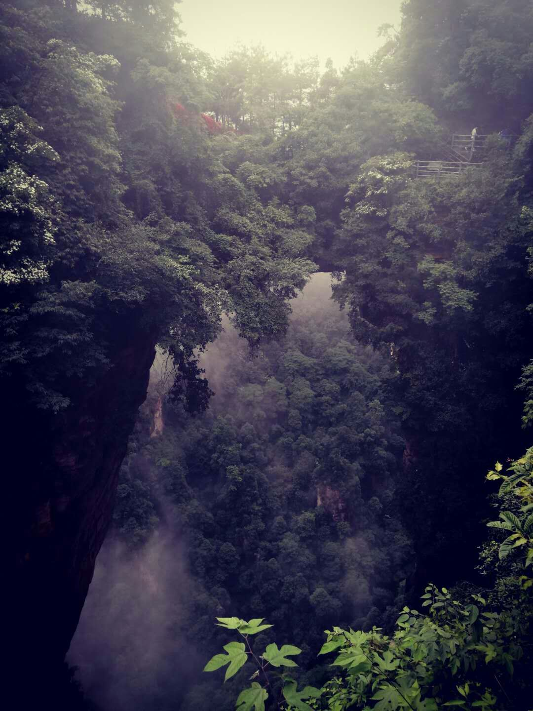
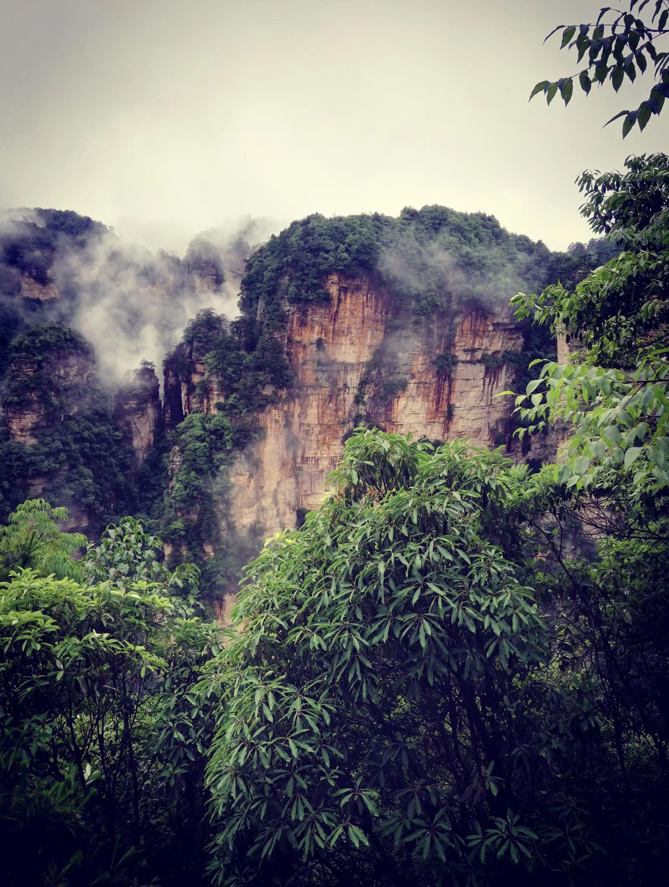
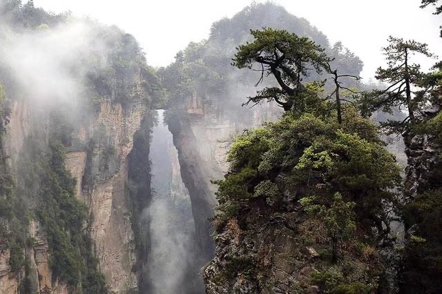
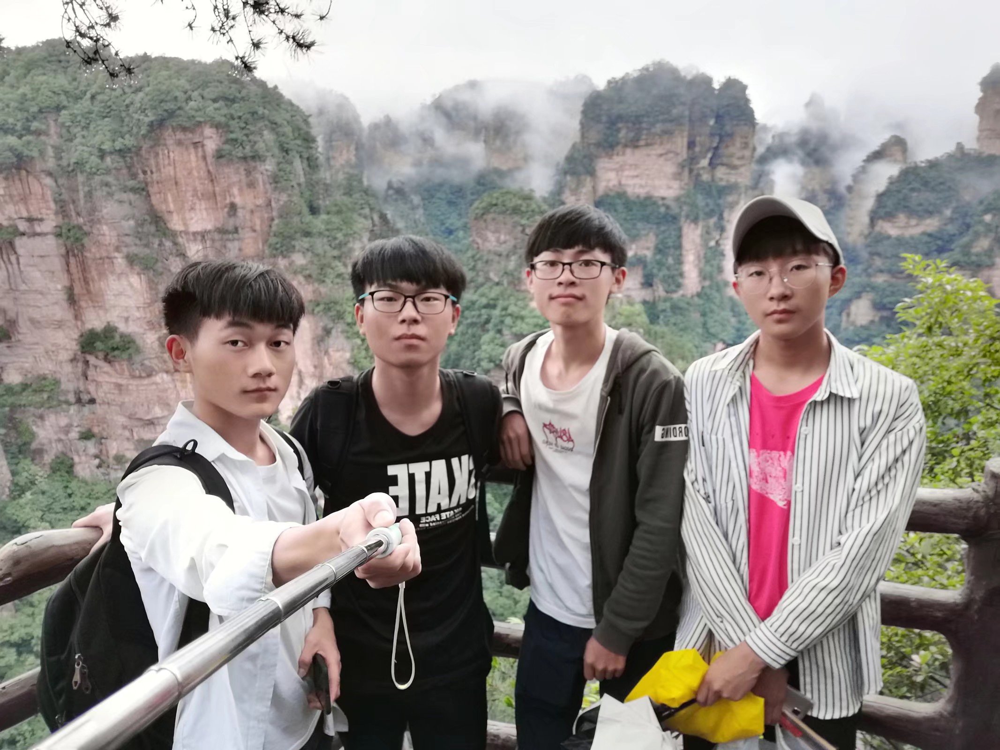
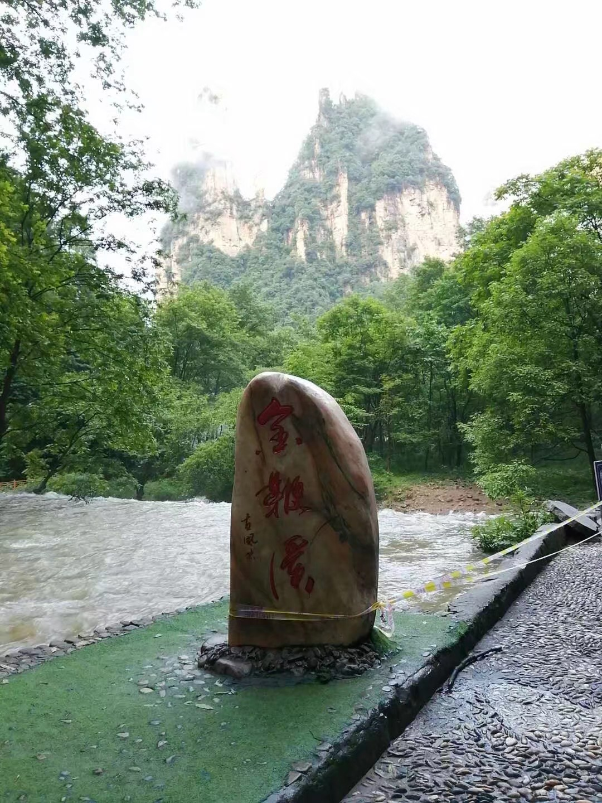
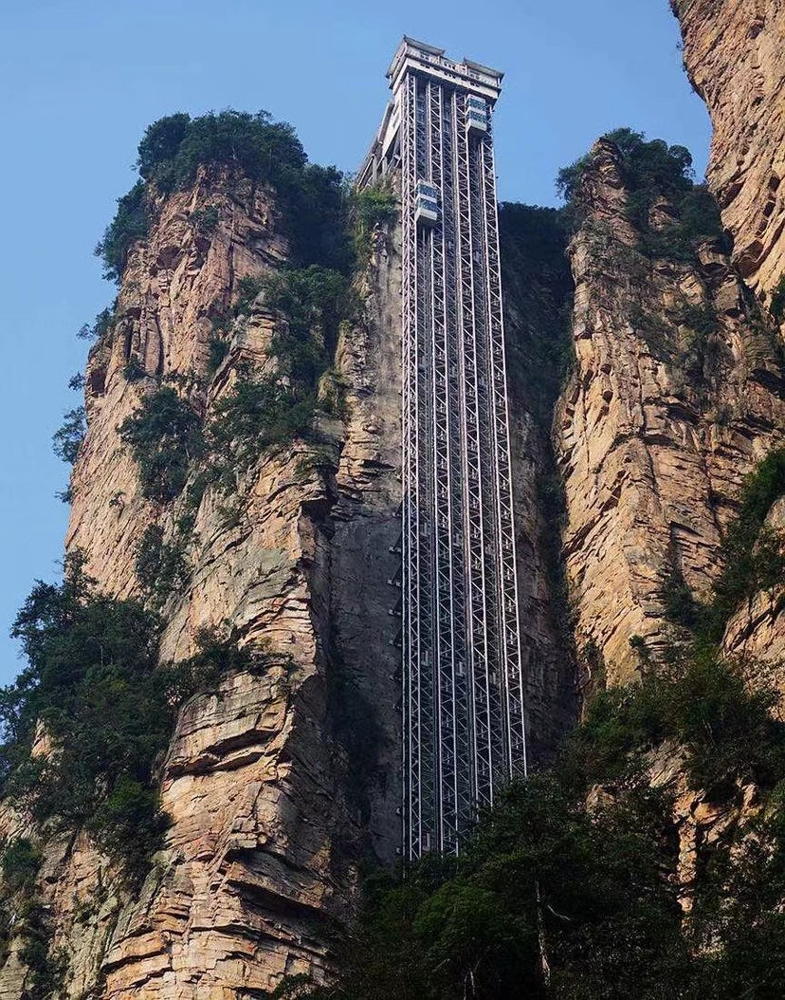
（右图）全长7.5公里长的金鞭溪因途径"张家界十大绝景"之一--神鹰护鞭的金鞭岩而得名，溪水明净，跌宕多姿，小鱼游弋其中。
贺龙公园 是为纪念贺龙元帅转战天子山而建，坐落湖南省张家界市天子山上，在1200米的千层岩左侧。（上图为贺龙元帅雕像，下图为其墓碑）
天子山索道是张家界继黄石寨索道后的第二条观光索道，全长2091米的索道单程最快为6分钟。（左侧小视频：本人索道乘坐ing）
（右图）百龙天梯运行高度326米，采用三台双层全暴露观光并列分体运行。目前以“最高户外电梯”荣誉而被载入吉尼斯世界纪录。（乘坐时小心耳鸣）
黄龙洞
黄龙洞作为世界自然遗产、世界地质公园张家界的有机组成部分，地处核心景区，属典型的喀斯特岩溶地貌，张家界旅游精品线之一，享有绝世奇观之美誉。黄龙洞现已开放龙舞厅、响水河、天仙水、天柱街、龙宫、迷宫、花果山等游览区。这些景区紧密相连，各有特色。黄龙洞洞中有洞，洞中有河，由石灰质溶液凝结而成的石钟乳、石笋、石柱、石花、石幔、石枝、石管、石珍珠、石珊瑚等各种洞穴景观遍布其中，琳琅满目，无所不奇，无奇不有，仿佛一座神奇的地下“魔宫”。黄龙洞拥有高阔的洞天、幽深的暗河、悬空的瀑布、密集的石笋等特级旅游资源，具有较高的观赏价值和科研价值，因其“规模最大、内容最全、景色最美”而被中外地质界权威人士公认为世界溶洞的“全能冠军”。石笋美不胜收。
玻璃桥大峡谷
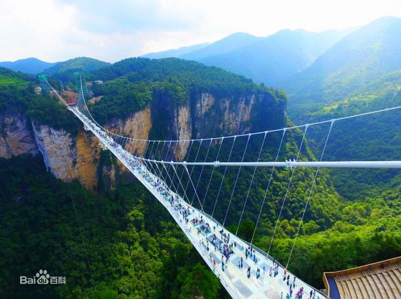
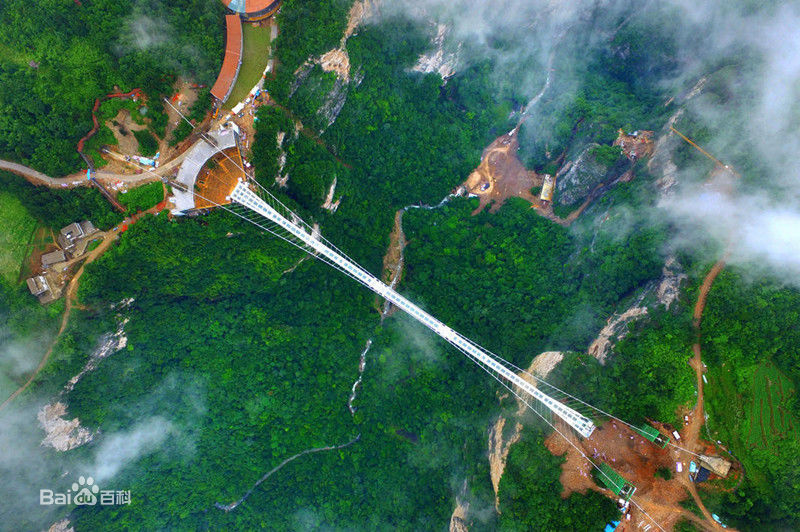
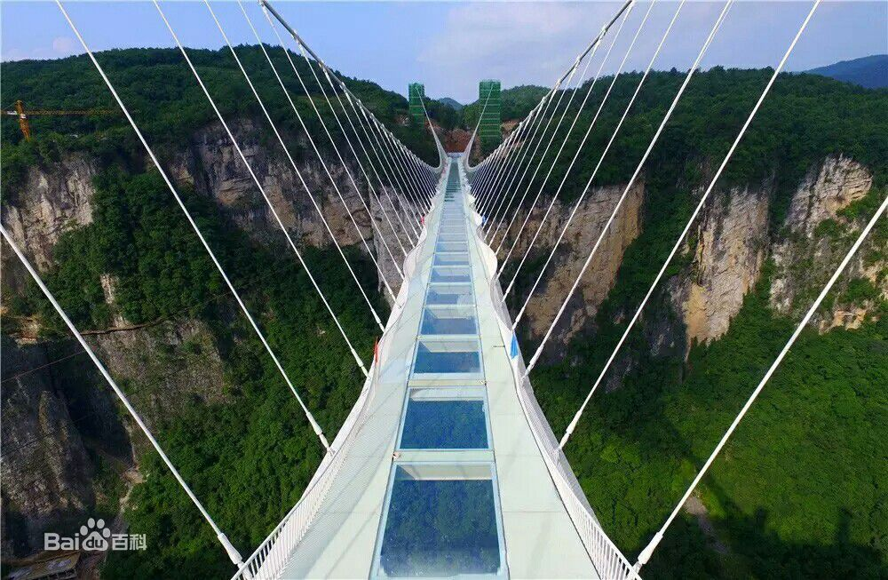
张家界大峡谷位于张家界市慈利县三官寺乡，紧邻世界自然遗产、世界地质公园张家界武陵源风景名胜区。 张家界大峡谷是一个新近开发建设的旅游景区，2011年成功创建AAAA级景区，2016年跻身全市第三大景区，成为全省十二条旅游精品线，2017年张家界大峡谷正式启动AAAAA级景区创建工作 ，2018年张家界大峡谷成为全市首个国家级服务业标准化示范区
张家界大峡谷玻璃桥名“云天渡”，位于湖南省张家界大峡谷景区栗树垭和吴王坡区域内，是一座景观桥梁，兼具景区行人通行、游览、蹦极、溜索、T台等功能。主跨430米，一跨过峡谷，桥面长375米，宽6米，桥面距谷底相对高度约300米。这座全透明玻璃桥高度位居世界第一。玻璃桥为世界首座斜拉式高山峡谷玻璃桥，并创下世界最高最长玻璃桥、首次使用新型复合材料建造桥梁等多项世界之最。2018年6月12日，在国际桥梁大会上斩获阿瑟·海登奖， 成为湖南第一个获得国际最高奖项的桥梁工程项目
*美食篇*
(蒿子粑粑)
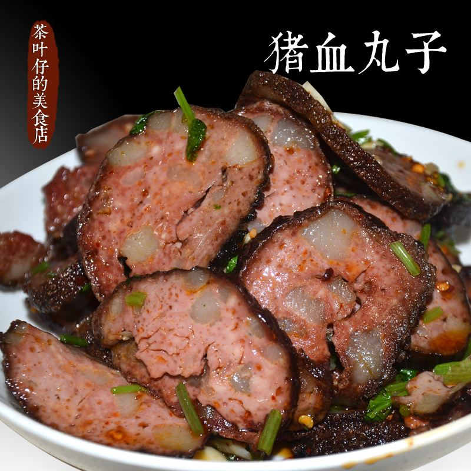
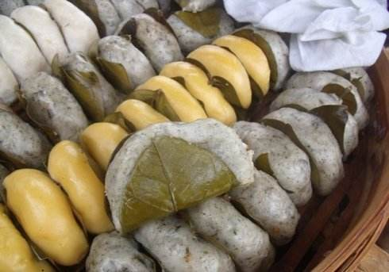
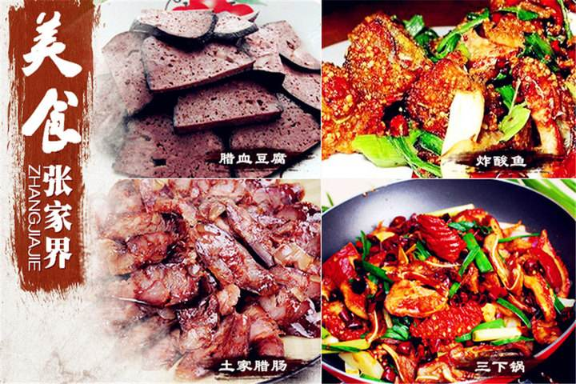
张家界的美食亦有地方特色。张家界饮食隶属湘菜系列，多以烟熏、火坑等农家风味，更常常以野菜为主料，是湘菜的延伸和补充。我们土家人在湘菜的辣中加入了酸、腊以及腌制菜食的风味，风味独
特，值得游客品尝品尝。张家界的特色菜有腊猪头、团年菜、血豆腐、合渣、酸鱼肉、泥鳅钻豆腐、乌鸡天麻汤等；风味小吃有社饭、猪血稀饭、桑植盐豆腐干、猕猴桃汁等。
吃 的 苦
霸 的 蛮
*名人篇*
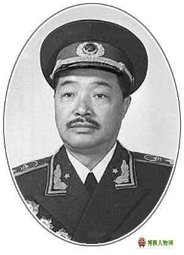
贺龙 十大元帅,共和国36位军事家 (1896～1969)
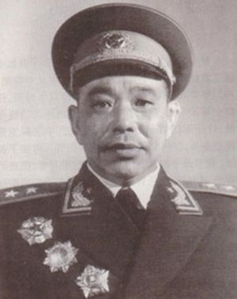
廖汉生 中国人民解放军开国中将 (1911～2006)
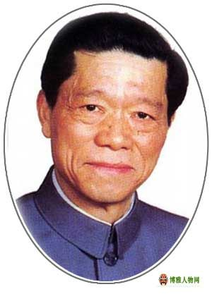
陈能宽 著名金属物理学家 (1923～2016)(慈利人)
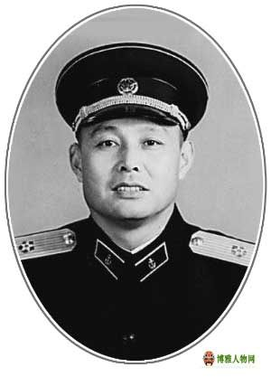
袁意奋 中国人民解放军少将 (1917～2007)